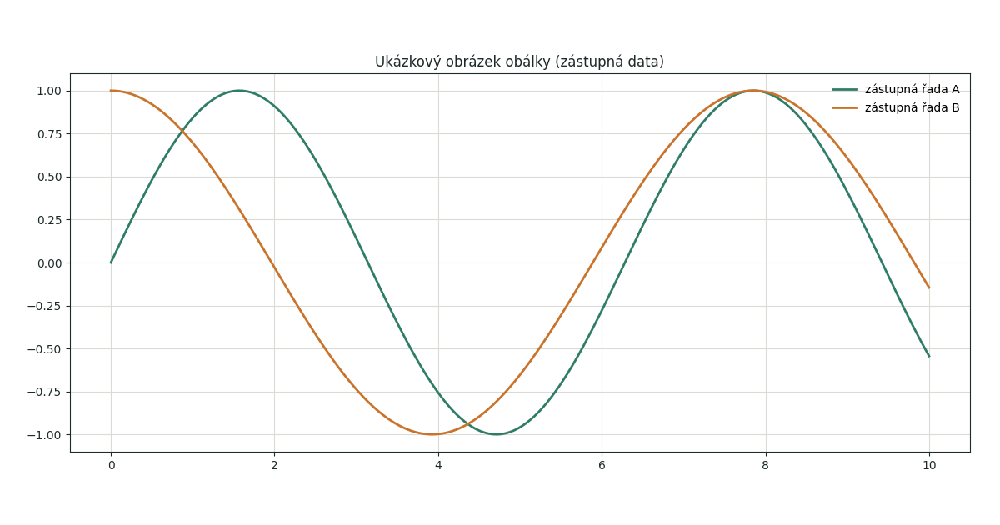
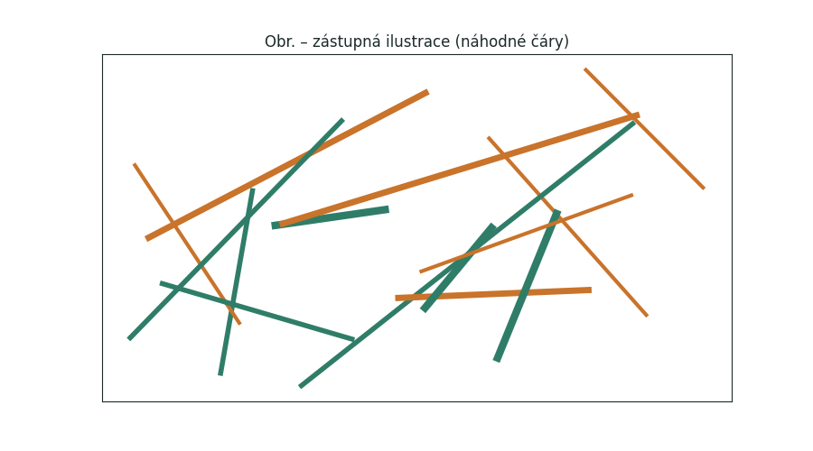
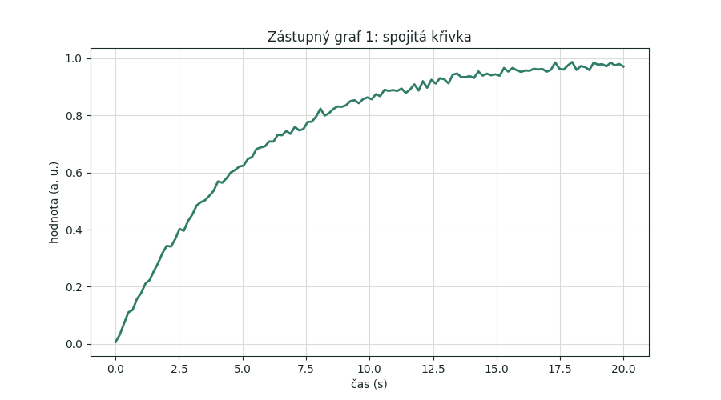
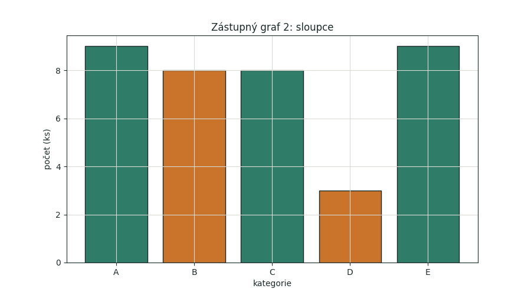

Ukázkový článek: všechny prvky blogu

Úvod
Tento článek existuje jen proto, aby šlo na jednom místě ověřit všechny povolené prvky blogu. Obsah je zástupný a nic z něj netvrdí o reálném měření. Odstavec je zarovnaný do bloku, takže je dobře vidět dělení slov, mezery mezi slovy i chování na úzkých displejích. Text může být tučný nebo kurzívou, nic dalšího. Odkaz na zdroj dole pod článkem vypadá takto[1].
Druhý odstavec slouží k ověření rytmu mezer. Mezi odstavci, nadpisy, obrázky, tabulkami i poznámkami má být všude stejná mezera, odvozená z jediné hodnoty. Odkaz na položku z pravého sloupce poznáš podle horního indexu s číslem1.
Seznamy
Odrážkový seznam má před každou položkou pomlčku, číslovaný seznam čísla.
- První položka odrážkového seznamu s delším textem, který se zalomí na další řádek a ukáže, jak vypadá odsazení.
- Druhá položka.
- Třetí položka s důrazem.
- První položka číslovaného seznamu.
- Druhá položka číslovaného seznamu s kurzívou.
- Třetí položka číslovaného seznamu.
Poznámky na okraji
Všechny položky v pravém sloupci jsou číslované jednotně dohromady. Tento odstavec odkazuje na obyčejnou poznámku2. Při najetí myší na číslo se poznámka zvýrazní, na mobilu klepnutí na číslo na poznámku přejede.
Další odstavec odkazuje na definici3, tedy vysvětlení pojmu, které čtenáře nevytrhne z textu. Číslování pokračuje, i když se druh položky změní, a zdroj dole se vždy odliší hranatými závorkami[2].
Obrázky a tabulky
Obrázek je v prostředním sloupci a popisek má pod sebou (obr. 1). Okraj obrázku je jen tenká čára, bez stínu a zaoblení.

Grafy jsou také obrázky s vlastními osami a bílým pozadím a číslují se společně s ostatními obrázky (obr. 2 a obr. 3).


Tabulka má tenké čáry, bez pozadí buněk a čísla zarovnaná doprava (tab. 1).
| Prvek | Popisek | Počet |
|---|---|---|
| Obrázek | Obr. | 3 |
| Tabulka | Tab. | 1 |
| Kód | Kód | 2 |
Kód
Kód je ručně obarvený třídami, má vlastní číslování a bezpatkové písmo. Kód 1 je krátký, kód 2 je delší a ověřuje vodorovné posouvání. Tlačítko pro kopírování se zobrazí při najetí.
const prumer = (hodnoty) =>
hodnoty.reduce((a, b) => a + b, 0) / hodnoty.length;
console.log(prumer([1, 2, 3]), 'hotovo');def vysledky_podle_kategorie(zaznamy, kategorie, minimum=0, maximum=100, oddelovac=';', kodovani='utf-8'):
return [z for z in zaznamy if z.kategorie == kategorie and minimum <= z.hodnota <= maximum]Závěr
Pokud se všechny prvky výše zobrazují správně v obou režimech i na mobilu, je základ blogu hotový. Poslední kapitola obsahu se musí zvýraznit i tehdy, když je stránka odscrollovaná úplně dolů.
Zdroje
- [1]Zástupný zdroj č. 1, jen pro ověření odkazu z odstavce.
- [2]Zástupný zdroj č. 2 s odkazem: example.com.